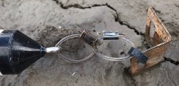

4 Deployment
Once the Mini Buoy has been assembled and the accelerometer is active, it is ready deployed at the survey location.
4.1 Installing the Mini Buoy
Mini Buoys can be used in single deployments to assess inundation characteristics at a given location, used in comparative deployments such as when comparing conditions between restoration and reference ‘natural’ sites, or used in multi-deployments to gather detailed hydrodynamic information.
Deployments should last more than 15 days to cover spring and neap tide variability. When deploying the Mini Buoy in the field, it is important to consider characteristics of the site and duration of the deployment. High-energy locations may be subject to excessive scouring that stress the Mini Buoy tether and may dislodge the anchor. At low-energy locations excessive sedimentation can bury the Mini Buoy. Using a cable tie to attach the Mini Buoy tether to an anchor buried > 0.5 m into the ground is recommended for a standard set-up. Gather the following equipment:
- Large cable tie
- 0.7 m length of metal rod with perforations
To install the Mini Buoy:
- Hammer the metal rod into the ground until 1 cm is protruding from the surface
- Attach the end of the fishing line chain to the anchor using the cable tie
- Move the Mini Buoy 360° around the anchor, and remove any obstructing objects
